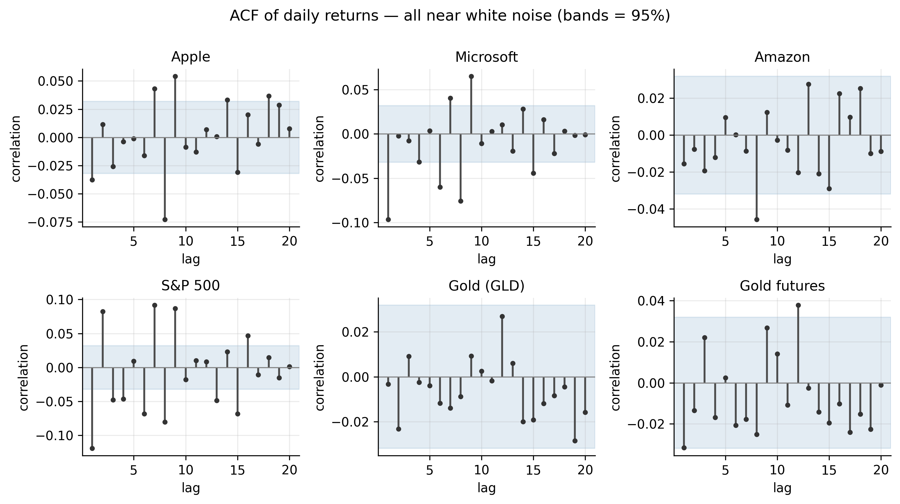
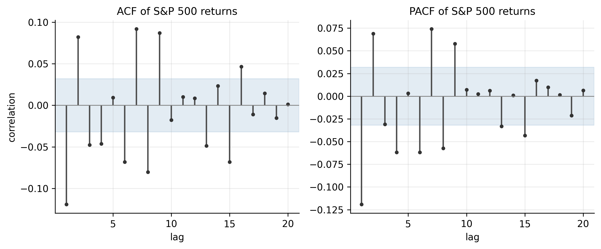
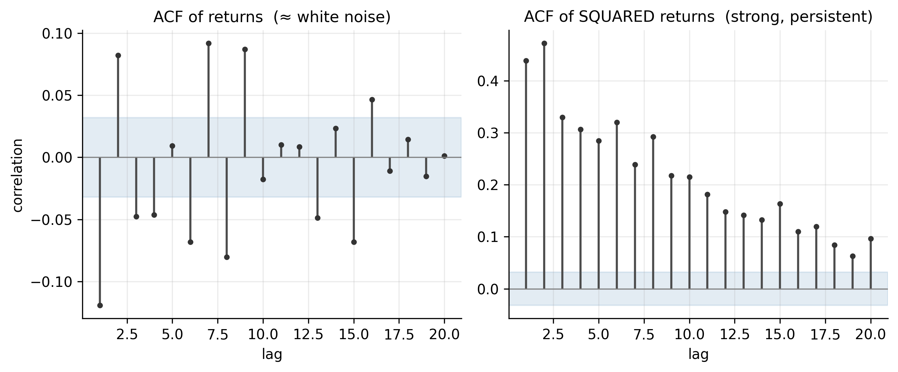
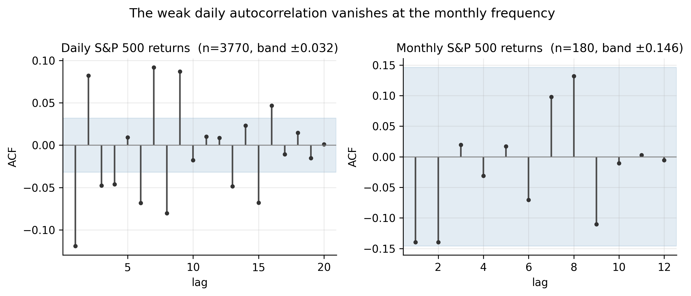
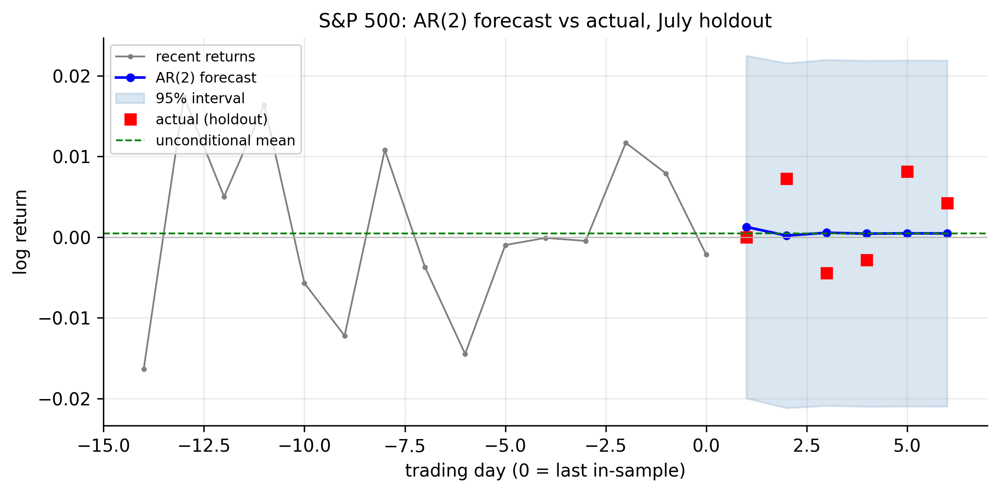

3 Linear Time Series Analysis
Our objective is concrete: to build robust models and forecasting tools for the returns of the instruments we care about — AAPL, MSFT, AMZN, the S&P 500, and gold. Before we can forecast, we need a language for describing how a series relates to its own past. That language is linear time series analysis, and its vocabulary — stationarity, the autocorrelation and partial-autocorrelation functions, white noise, and the autoregressive model — is what this chapter assembles. By the end we will fit our first genuine forecasting model, the AR model, to each series and see, in hard numbers, how far the mean of daily returns can (and cannot) be predicted.
The R code uses base graphics plus stats/forecast; Python uses statsmodels.
3.1 Stationarity
Every model in our toolkit assumes the series is weakly stationary: its mean, variance, and the correlation between observations \(k\) steps apart do not change over time. Formally, \(\{r_t\}\) is weakly stationary if
\[ \begin{aligned} &E[r_t] = \mu \;\text{(constant)}, \qquad \operatorname{Var}(r_t) = \sigma^2 \;\text{(constant)}, \\[4pt] &\operatorname{Cov}(r_t, r_{t-k}) = \gamma_k \;\text{(depends only on the lag } k\text{)}. \end{aligned} \tag{3.1}\]
The point of stationarity is estimation: only if the correlation structure is stable through time can we pool the whole sample to estimate one set of parameters and use them to forecast forward. A series whose behaviour drifts gives us nothing to estimate. We established in Chapter 1 that our log returns are stationary while prices are not — which is exactly why every model here is built on returns. (Strict stationarity, requiring the entire joint distribution to be time-invariant, is stronger than we need; weak stationarity of the first two moments is the working assumption.)
3.2 Correlation and the autocorrelation function
The engine of linear time series is serial correlation: the correlation of a series with lagged copies of itself. The autocovariance at lag \(k\) is \(\gamma_k = \operatorname{Cov}(r_t, r_{t-k})\), and dividing by the variance gives the autocorrelation function (ACF),
\[ \rho_k = \frac{\gamma_k}{\gamma_0} = \frac{\operatorname{Cov}(r_t, r_{t-k})}{\operatorname{Var}(r_t)}, \qquad -1 \le \rho_k \le 1 . \tag{3.2}\]
The ACF answers “how strongly does today’s return move with the return \(k\) days ago?” Its sample estimate from \(T\) observations is
\[ \hat\rho_k = \frac{\sum_{t=k+1}^{T} (r_t-\bar r)(r_{t-k}-\bar r)} {\sum_{t=1}^{T} (r_t-\bar r)^2}. \tag{3.3}\]
Under the hypothesis that the series is uncorrelated, each \(\hat\rho_k\) is approximately \(N(0, 1/T)\), so values outside the band \(\pm 1.96/\sqrt{T}\) are significant at \(5\%\). For our sample of \(T \approx 3{,}770\) that band is a tight \(\pm 0.032\).
Rather than eyeball \(k\) correlations one at a time, the Ljung–Box test bundles the first \(m\) into a single portmanteau statistic,
\[ Q(m) = T(T+2) \sum_{k=1}^{m} \frac{\hat\rho_k^2}{T-k} \;\sim\; \chi^2_m \quad\text{under the white-noise null.} \tag{3.4}\]
A large \(Q\) rejects the hypothesis of no autocorrelation. Applied to our six return series (with \(m=10\); the \(5\%\) critical value is \(18.31\)), the verdict already splits the group in two:
symbols <- c("AAPL","MSFT","AMZN","SPX","GLD","GCF")
est_return <- function(sym) {
d <- read.csv(sprintf("data/%s.csv", sym)); d$Date <- as.Date(d$Date)
d <- d[d$Date <= as.Date("2026-07-01"), ]
diff(log(d$Adjusted))
}
for (s in symbols) {
r <- est_return(s)
print(c(series = s,
acf1 = round(acf(r, plot = FALSE)$acf[2], 3),
LB10 = round(Box.test(r, lag = 10, type = "Ljung-Box")$statistic, 1)))
}import pandas as pd, numpy as np
from statsmodels.stats.diagnostic import acorr_ljungbox
from statsmodels.tsa.stattools import acf
def est_return(sym):
d = pd.read_csv(f"data/{sym}.csv", parse_dates=["Date"]).set_index("Date")
return np.log(d[d.index <= "2026-07-01"]["Adjusted"]).diff().dropna()
for s in ["AAPL","MSFT","AMZN","SPX","GLD","GCF"]:
r = est_return(s)
lb = acorr_ljungbox(r, lags=[10]).lb_stat.iloc[0]
print(s, round(acf(r, nlags=1)[1], 3), round(lb, 1))| Ticker | \(\hat\rho_1\) | Ljung–Box \(Q(10)\) | White noise? |
|---|---|---|---|
| AAPL | −0.038 | 48.0 | rejected (faintly) |
| MSFT | −0.097 | 97.4 | rejected |
| AMZN | −0.016 | 12.3 | not rejected |
| SPX | −0.119 | 199.7 | rejected |
| GLD | −0.003 | 4.4 | not rejected |
| GCF | −0.032 | 16.0 | not rejected |
Figure 3.1 shows the ACF of all six series out to 20 lags. The visual message is unambiguous and central to our whole enterprise: daily returns are very close to uncorrelated. Almost every bar sits inside the significance band; the only consistent exception is a small negative spike at lag 1 for the S&P 500 and Microsoft.

This is weak-form market efficiency made visible, and it sets a sober expectation for our forecasting goal: if returns barely correlate with their own past, a linear model of the mean return has very little to work with. The three series that fail to reject white noise — Amazon and both gold series — have, to a linear model, no predictable mean structure at all.
3.3 Partial autocorrelation, and how it differs from the ACF
The ACF has a blind spot. If today correlates with yesterday, and yesterday with the day before, then today correlates with two days ago indirectly — even if there is no direct link. The ACF cannot separate the direct relationship from the inherited one. The partial autocorrelation function (PACF) fixes this: the lag-\(k\) partial autocorrelation is the correlation between \(r_t\) and \(r_{t-k}\) after removing the effect of the intermediate lags \(r_{t-1}, \dots, r_{t-k+1}\). Operationally, it is the coefficient \(\hat\phi_{kk}\) on \(r_{t-k}\) when you fit an autoregression of order \(k\).
The distinction is what lets us read a model off the data, because the two functions have mirror-image signatures:
| Process | ACF | PACF |
|---|---|---|
| AR(\(p\)) | tails off (decays gradually) | cuts off after lag \(p\) |
| MA(\(q\)) | cuts off after lag \(q\) | tails off |
| ARMA(\(p,q\)) | tails off | tails off |
So a sharp PACF cutoff points to an AR model and tells you its order; a sharp ACF cutoff points to an MA model. Figure 3.2 shows both for the S&P 500. The ACF decays while the PACF has its largest spike at lag 1 (with a couple of smaller significant lags after) — the fingerprint of a low-order autoregression, the model we develop next.

r <- est_return("SPX")
op <- par(mfrow = c(1, 2))
acf (r, lag.max = 20, main = "ACF of S&P 500 returns")
pacf(r, lag.max = 20, main = "PACF of S&P 500 returns")
par(op)from statsmodels.graphics.tsaplots import plot_acf, plot_pacf
import matplotlib.pyplot as plt
r = est_return("SPX")
fig, ax = plt.subplots(1, 2, figsize=(9, 4))
plot_acf (r, lags=20, ax=ax[0]); plot_pacf(r, lags=20, ax=ax[1], method="ywm")
plt.tight_layout(); plt.show()3.4 White noise and linear time series
White noise is a sequence of uncorrelated shocks with zero mean and constant variance — the formal version of “no predictable pattern left.”
The benchmark against which all this is measured is white noise: a sequence \(\{a_t\}\) with mean zero, constant variance \(\sigma^2\), and no autocorrelation at any lag (\(\rho_k = 0\) for all \(k \neq 0\)). White noise is, by construction, unforecastable from its own past — its best forecast is always its mean.
Our finding in Section 3.2 can now be stated sharply: in the mean, daily returns are approximately white noise. But “white noise” carries a subtlety that is decisive for our objective. Uncorrelated does not mean independent. A series can have zero linear autocorrelation yet be strongly dependent in a nonlinear way — and returns are exactly such a series. Figure 3.3 makes the point by comparing the ACF of the S&P 500’s returns with the ACF of its squared returns.

The returns themselves are uncorrelated, but the squared returns are strongly and persistently correlated (the lag-1 autocorrelation of squared S&P returns is about \(0.44\), and it stays high for many lags). Big days follow big days; calm follows calm. This is volatility clustering, and it means the direction of tomorrow’s return is nearly unpredictable while its magnitude is highly predictable. For our toolkit this is the pivotal fact: it tells us the payoff in forecasting returns lies not in the mean — where AR models will struggle — but in the variance, which is the target of the GARCH models we build next.
Formally, the class of models we are entering is the linear time series, in which \(r_t\) is a linear combination of current and past white-noise shocks (the Wold representation),
\[ r_t = \mu + \sum_{i=0}^{\infty} \psi_i\, a_{t-i}, \qquad \psi_0 = 1, \tag{3.5}\]
where \(\{a_t\}\) is white noise and the \(\psi_i\) (the impulse-response weights) describe how a shock today echoes into the future. The AR, MA, and ARMA models are simply parsimonious ways of parameterising these weights. We begin with the AR model.
3.5 Simple autoregressive (AR) models
An autoregressive (AR) model predicts today’s value from a weighted sum of its own recent past values, plus a random shock.
An autoregressive model of order \(p\), AR(\(p\)), regresses the series on its own recent past:
\[ r_t = \phi_0 + \phi_1 r_{t-1} + \phi_2 r_{t-2} + \cdots + \phi_p r_{t-p} + a_t, \tag{3.6}\]
with \(\{a_t\}\) white noise. It is the most natural first forecasting model: to predict tomorrow, take a weighted combination of the last \(p\) days. The AR(1), \(r_t = \phi_0 + \phi_1 r_{t-1} + a_t\), is the workhorse special case.
3.5.1 Properties of AR models
For the AR(1), provided \(|\phi_1| < 1\), the process is stationary with
\[ \begin{aligned} E[r_t] &= \frac{\phi_0}{1-\phi_1}, \qquad \operatorname{Var}(r_t) = \frac{\sigma^2}{1-\phi_1^2}, \\[4pt] \rho_k &= \phi_1^{\,k}. \end{aligned} \tag{3.7}\]
Three things to read here. The mean is \(\phi_0/(1-\phi_1)\), so the intercept is not the mean unless \(\phi_1=0\). The ACF decays geometrically as \(\phi_1^k\) — it tails off rather than cutting off, matching Table 3.2. And \(\phi_1\) is the persistence: \(\phi_1>0\) gives momentum, \(\phi_1<0\) gives mean-reversion (a negative \(\phi_1\), which is what our data shows, means an up day tends to be followed by a down day).
For the general AR(\(p\)), stationarity requires the roots of the characteristic equation
\[ 1 - \phi_1 z - \phi_2 z^2 - \cdots - \phi_p z^p = 0 \tag{3.8}\]
to lie outside the unit circle. The mean is \(\mu = \phi_0/(1-\phi_1-\cdots-\phi_p)\), the ACF tails off (following a difference equation set by the \(\phi\)’s), and — the identification key — the PACF cuts off after lag \(p\).
3.5.2 Identifying AR models
Identification means choosing the order \(p\) — how many past lags to include. Two complementary tools do this: the PACF proposes a candidate order from its shape, and an information criterion selects one through a formal fit-versus-complexity trade-off. We then confirm the choice with residual diagnostics (Section 3.5.4).
Reading a candidate order off the PACF. From Table 3.2, an AR(\(p\)) has a PACF that is significant up to lag \(p\) and then cuts off. So we count the PACF spikes poking outside the \(\pm 1.96/\sqrt{T}\) band: one spike (lag 1) for Microsoft suggests AR(1); several early spikes for the S&P 500 suggest a higher order; none for Amazon or gold suggests AR(0). The PACF is fast and intuitive but judgmental — deciding which borderline spikes are real is subjective — so we back it with a criterion that attaches a number to the trade-off.
What an information criterion actually does. Adding a lag can only improve the in-sample fit: the residual variance \(\hat\sigma^2\) falls (weakly) as \(p\) grows, because more parameters always fit the sample better. Chasing “best fit” alone would therefore always pick the biggest model — pure overfitting. An information criterion stops this by charging a penalty per parameter, so a lag survives only if it improves the fit by more than it costs:
\[ \begin{aligned} \text{AIC} &= \underbrace{T \ln(\hat\sigma^2)}_{\text{fit (smaller is better)}} + \underbrace{2k}_{\text{penalty}}, \\[4pt] \text{BIC} &= T \ln(\hat\sigma^2) + \underbrace{k \ln T}_{\text{penalty}}, \end{aligned} \tag{3.9}\]
where \(\hat\sigma^2\) is the residual variance and \(k\) the number of estimated parameters. We fit the model at each order \(p = 0, 1, 2, \dots\) and select the order with the smallest criterion.
Why AIC and BIC disagree. The only difference is the price per parameter: AIC charges \(2\), BIC charges \(\ln T\) — here \(\ln(3762) \approx 8.2\), roughly four times more. A lag must clear a higher bar to be admitted by BIC than by AIC. Concretely, an AR coefficient of magnitude \(\phi\) lowers \(T\ln\hat\sigma^2\) by about \(T\phi^2\), so a lag earns its place when \(T\phi^2\) beats the penalty — i.e. when
\[ |\phi| \gtrsim \sqrt{\tfrac{2}{T}} \approx 0.023 \;\;(\text{AIC}), \qquad |\phi| \gtrsim \sqrt{\tfrac{\ln T}{T}} \approx 0.047 \;\;(\text{BIC}). \tag{3.10}\]
BIC’s bar is twice AIC’s. This is more than cosmetic: as the sample grows, BIC is consistent — it selects the true order with probability approaching one — whereas AIC is not, keeping a nonzero chance of over-selecting no matter how large \(T\) is. With \(T \approx 3{,}800\), AIC will routinely tag tiny, economically meaningless lags as worth keeping, so we lean on BIC for parsimony and use AIC as a second opinion.
Watching a criterion pick the order. The idea becomes concrete when you tabulate the criterion at each order. Table 3.3 does this for Apple, reporting each order as a difference from the best, \(\Delta = \text{IC} - \min\text{IC}\), so the chosen order is the one at \(\Delta = 0\).
| Order \(p\) | 0 | 1 | 2 | 3 | 4 | 5 | 6 | 7 | 8 |
|---|---|---|---|---|---|---|---|---|---|
| \(\Delta\)AIC | 18.6 | 15.2 | 16.8 | 16.4 | 18.3 | 20.2 | 21.2 | 16.5 | 0.0 |
| \(\Delta\)BIC | 0.0 | 2.8 | 10.7 | 16.5 | 24.6 | 32.8 | 40.0 | 41.6 | 31.3 |
The two rows disagree sharply. BIC is smallest at \(p=0\) and climbs from there — every added lag costs more penalty than it repays, so BIC calls Apple white noise. AIC is smallest at \(p=8\), dragged to the largest order on offer because its gentler penalty lets a run of individually trivial lags accumulate. This resolves the puzzle Apple posed back in Table 3.1: Ljung–Box did detect autocorrelation (\(Q=48\), rejected), and it is real — but it is smeared thinly across many lags, each below BIC’s \(|\phi|\approx0.047\) bar. AIC chases it into a spurious AR(8); BIC correctly keeps nothing. A significant portmanteau test does not mean a model is worth fitting — it says some dependence exists, not that it is large enough to exploit.
The order chosen for each series. Running both criteria across all six tickers lays their mean dynamics side by side:
# AIC- and BIC-optimal AR order for each series
for (s in c("AAPL","MSFT","AMZN","SPX","GLD","GCF")) {
r <- est_return(s)
ics <- sapply(0:8, function(p) {
f <- arima(r, order = c(p, 0, 0), method = "ML")
c(AIC = AIC(f), BIC = BIC(f))
})
cat(s, " AIC-order:", which.min(ics["AIC", ]) - 1,
" BIC-order:", which.min(ics["BIC", ]) - 1, "\n")
}from statsmodels.tsa.arima.model import ARIMA
def ic_orders(sym, pmax=8):
r = est_return(sym)
fits = [ARIMA(r, order=(p, 0, 0)).fit() for p in range(pmax + 1)]
return (int(np.argmin([f.aic for f in fits])),
int(np.argmin([f.bic for f in fits])))
for s in ["AAPL","MSFT","AMZN","SPX","GLD","GCF"]:
print(s, "AIC/BIC order:", ic_orders(s))| Ticker | AIC order | BIC order | Chosen model | Reading |
|---|---|---|---|---|
| AMZN | 0 | 0 | AR(0) — white noise | both criteria agree: nothing to model |
| GLD | 0 | 0 | AR(0) — white noise | both agree |
| GCF | 1 | 0 | AR(0) — white noise | AIC keeps a faint lag-1; BIC rejects it |
| AAPL | 8 | 0 | AR(0) — white noise | AIC over-selects (Table 3.3); BIC and parsimony win |
| MSFT | 8 | 1 | AR(1), \(\hat\phi_1 = -0.10\) | BIC keeps exactly one real lag: mild mean-reversion |
| SPX | 8 | 8 | higher-order AR | both criteria want many lags — genuine structure |
Now the columns tell a clean story. Where AIC and BIC agree on 0 (Amazon, gold) the series is unambiguously white noise. Where they disagree (gold futures, Apple, Microsoft) the gap is exactly AIC’s known over-selection, and BIC’s parsimony is the call to trust — white noise for Apple and gold-futures, a tidy AR(1) for Microsoft (\(\hat\phi_1 = -0.10\): up days mildly tend to be followed by down days). The one series where even BIC wants many lags is the S&P 500 — its short-horizon structure is real and multi-lag, plausibly a trace of index microstructure and lead–lag effects among its constituents.
The theme unifying the table: wherever a model is warranted, its coefficients are tiny (\(|\hat\phi_1| \le 0.12\)). The mean of daily returns carries very little exploitable structure — which is exactly why, for our forecasting objective, the leverage is in the variance, not the mean.
3.5.3 AR models at the monthly frequency
Everything so far used daily returns. Do the same tickers behave differently at the monthly frequency? A monthly log return is the sum of about twenty-one daily ones (Equation 1.4), and such sums are better-behaved (Section 2.6). Aggregating each series to month-end gives about \(180\) observations, on which we repeat the identification.
monthly_return <- function(sym) {
d <- read.csv(sprintf("data/%s.csv", sym)); d$Date <- as.Date(d$Date)
d <- d[d$Date <= as.Date("2026-07-01"), ]
lp <- log(d$Adjusted)
last_month <- lp[tapply(seq_along(lp), cut(d$Date, "month"), max)]
diff(last_month) # monthly log returns
}
library(forecast)
for (s in c("AAPL","MSFT","AMZN","SPX","GLD","GCF")) {
m <- monthly_return(s)
cat(s, " n:", length(m),
" LB(12):", round(Box.test(m, 12, "Ljung-Box")$statistic, 1),
" BIC-order:",
auto.arima(m, max.p = 6, max.q = 0, d = 0, seasonal = FALSE, ic = "bic")$arma[1],
"\n")
}def monthly_return(sym):
d = pd.read_csv(f"data/{sym}.csv", parse_dates=["Date"]).set_index("Date")
d = d[d.index <= "2026-07-01"]
return np.log(d["Adjusted"]).resample("ME").last().diff().dropna()
for s in ["AAPL","MSFT","AMZN","SPX","GLD","GCF"]:
m = monthly_return(s)
lb = acorr_ljungbox(m, lags=[12]).lb_stat.iloc[0]
print(s, len(m), round(lb, 1))With only \(\sim\!180\) monthly observations the significance band widens to \(\pm 1.96/\sqrt{180} \approx \pm 0.146\) — far looser than the daily \(\pm 0.032\). Table 3.5 sets the two frequencies side by side.
| Ticker | Daily BIC order | Monthly \(\hat\rho_1\) | Monthly LB(12) | Monthly BIC order |
|---|---|---|---|---|
| AAPL | 0 | +0.090 | 12.3 | 0 |
| MSFT | 1 | −0.078 | 6.7 | 0 |
| AMZN | 0 | −0.090 | 7.1 | 0 |
| SPX | 8 | −0.140 | 15.9 | 0 |
| GLD | 0 | −0.046 | 10.3 | 0 |
| GCF | 0 | −0.038 | 11.6 | 0 |
The result is unambiguous: at the monthly frequency every one of the six series is white noise. No lag-1 autocorrelation clears the band, no Ljung–Box statistic reaches its \(21.03\) critical value, and BIC selects AR(0) for all six — even the S&P 500, whose daily returns carried the richest structure of the group. Figure 3.4 shows the disappearance for the S&P directly: the clear negative lag-1 spike in daily returns is simply gone once we aggregate.

Two forces drive this, and both matter for our objective. First, aggregation washes the structure out: the negative lag-1 autocorrelation in daily index and stock returns is a high-frequency effect — short-term reversal and microstructure noise such as the bid–ask bounce — and summing twenty-one days averages it away. Second, power falls: with \(180\) observations instead of \(3{,}770\), the test cannot detect correlations as small as those that remain. Either way the message sharpens rather than contradicts the daily finding: the mean of returns grows more unforecastable, not less, as the horizon lengthens. For monthly forecasting the honest AR model is AR(0) — the best forecast of next month’s return is its long-run average. The predictability our toolkit can exploit is not in the mean at any frequency; it is in the volatility.
3.5.4 Goodness of fit
A fitted AR model earns its keep only if its residuals are white noise — if \(\hat a_t = r_t - \hat r_t\) shows no leftover autocorrelation (checked with Ljung–Box on the residuals) then the linear structure has been captured. But the more sobering diagnostic is how little structure there was to capture. The coefficient of determination for these fits is
\[ R^2 \approx 1 - \frac{\hat\sigma_a^2}{\hat\sigma_r^2}, \tag{3.11}\]
and for the S&P 500’s AR model it is about 0.018 — under \(2\%\) of the variance of daily returns is explained by its own past. Microsoft’s AR(1) explains about \(1\%\) (\(R^2 \approx \hat\phi_1^2\)). Fitting the AR does whiten the residuals’ linear autocorrelation, but it leaves the squared-residual correlation of Figure 3.3 completely intact — the volatility clustering is untouched, waiting for GARCH.
fit <- arima(est_return("SPX"), order = c(2, 0, 0))
Box.test(residuals(fit), lag = 10, type = "Ljung-Box") # residuals ~ white noise?
1 - fit$sigma2 / var(est_return("SPX")) # approx R^2from statsmodels.tsa.arima.model import ARIMA
fit = ARIMA(est_return("SPX"), order=(2, 0, 0)).fit()
print(acorr_ljungbox(fit.resid, lags=[10])) # residual white-noise test
print(1 - fit.resid.var() / est_return("SPX").var()) # approx R^23.5.5 Forecasting
Forecasting from an AR model is recursive: to forecast \(h\) steps ahead, plug in earlier forecasts for the unknown future values. For the AR(1) this gives a clean closed form,
\[ \hat r_t(h) = \mu + \phi_1^{\,h}\,(r_t - \mu), \tag{3.12}\]
which decays to the unconditional mean \(\mu\) as the horizon \(h\) grows — the farther out we look, the more the forecast forgets today and reverts to the average return. Meanwhile the forecast-error variance grows with the horizon, from the one-step \(\sigma^2\) up toward the unconditional variance \(\sigma^2/(1-\phi_1^2)\).
Figure 3.5 applies this to the S&P 500 over our July holdout, forecasting the six trading days after the estimation window with a parsimonious AR(2).

fit <- arima(est_return("SPX"), order = c(2, 0, 0))
predict(fit, n.ahead = 6) # $pred (forecasts) and $se (std errors)fit = ARIMA(est_return("SPX"), order=(2, 0, 0)).fit()
fc = fit.get_forecast(steps=6)
print(fc.predicted_mean, fc.conf_int())The figure is the honest verdict on mean forecasting, and it is exactly what the theory predicts. The point forecast flattens to \(\approx 0.05\%\) within two days; the \(95\%\) interval is enormous relative to it (about \(\pm 2\%\), i.e. forty times the forecast); and the realised returns land all over that band with no directional agreement. The AR model’s most useful output is not the point forecast but the interval — an honest statement that tomorrow’s return is \(0.05\% \pm 2\%\), dominated by noise.
The S&P 500 is not a special case. The carousel below runs the identical exercise for all six tickers — each fit with its own identified AR order and forecast across the same July holdout. Click the arrows (or the dots) to step through them.
Every panel is the same shape. For the AR(0) series — Amazon, both gold series, and Apple — the forecast is exactly the historical mean, a flat line inside a flat \(\pm 2\)–\(4\%\) band; for Microsoft’s AR(1) and the S&P’s AR(2) there is a barely perceptible one-day wiggle before reversion. In every case the realised holdout returns scatter across the interval with no directional agreement. Across a mega-cap stock, a broad index, and gold alike, the mean of daily returns is effectively unforecastable, and the interval — not the point — is the deliverable.
This is not a failure of the model; it is the model correctly reporting weak-form efficiency. And it sharpens our objective precisely. A robust forecasting toolkit for these series will not make money predicting the direction of daily returns — the AR model proves there is almost nothing there. Its real leverage is in the magnitude: the volatility clustering of Figure 3.3, which we turn into conditional-variance forecasts and Value-at-Risk in the GARCH stage of the toolkit.
- Stationarity (Equation 3.1) lets us estimate one stable correlation structure from the whole sample — our returns have it, prices do not.
- The ACF (Equation 3.2) measures total serial correlation; the PACF measures the direct correlation at a lag. Their cutoff/tail-off signatures identify the model (Table 3.2).
- Daily returns are approximately white noise in the mean — but not independent: squared returns are strongly correlated (volatility clustering), which is where our forecasting leverage really lies.
- AR(\(p\)) models the mean from its own past; the PACF and BIC identify the order. Across our tickers the orders differ sharply — Amazon and gold are white noise, Microsoft a clean AR(1), the S&P richer — but every coefficient is tiny.
- AR forecasts revert to the mean with widening intervals (Equation 3.12); for daily returns they explain under \(2\%\) of variance, so the point forecast is near-flat and the interval is the real deliverable.
- Aggregation matters: at the monthly frequency all six series are white noise (AR(0)) — the mean grows more unforecastable as the horizon lengthens.
3.6 Concept check
Work through these before moving on. Each answer is collapsed — decide first, then expand it.
Q1. Why does our framework model returns rather than prices?
- (a) Returns are always positive, which the models require.
- (b) Prices are non-stationary (they carry a unit root) while returns are approximately stationary, which is the precondition our models need.
- (c) Returns have larger means than prices.
- (d) Prices cannot be aggregated across time.
(b). Every model here assumes weak stationarity — a stable mean, variance, and autocovariance. Prices trend and wander (unit root); differencing the log price into a return removes that unit root and delivers a stationary series.
Q2. A series has an ACF that decays gradually and a PACF that cuts off sharply after lag 1. This is the signature of:
- (a) an MA(1) process.
- (b) white noise.
- (c) an AR(1) process.
- (d) a random walk.
(c). AR(\(p\)): ACF tails off, PACF cuts off after lag \(p\). A single PACF spike with a decaying ACF is AR(1). (An MA(1) shows the mirror image — ACF cuts off, PACF tails off.)
Q3. The S&P 500’s return ACF is near zero, but the ACF of its squared returns is large and persistent. Daily returns are therefore:
- (a) independent and identically distributed.
- (b) uncorrelated but not independent — dependent in their variance.
- (c) strongly autocorrelated in the mean.
- (d) non-stationary.
(b). White noise means uncorrelated, not independent. Zero autocorrelation in returns with strong autocorrelation in squared returns is volatility clustering — nonlinear dependence in the variance, the target of the GARCH stage.
Q4. With ≈3,800 observations, AIC selects AR(8) for Apple while BIC selects AR(0). The best interpretation is:
- (a) Apple has strong eight-lag structure that BIC misses.
- (b) AIC is always more accurate than BIC.
- (c) AIC’s lighter per-parameter penalty (\(2\) vs \(\ln T \approx 8.2\)) makes it over-select trivial lags in large samples; BIC’s parsimony is more trustworthy here.
- (d) The data are corrupted.
(c). BIC is consistent (it finds the true order as \(T\to\infty\)); AIC is not and tends to over-select in large samples. Here BIC’s AR(0) — white noise — is the honest call.
Q5. Apple’s Ljung–Box test rejects white noise (\(Q=48\)), yet its chosen model is AR(0). Why is that not a contradiction?
- (a) The Ljung–Box test is simply wrong.
- (b) A significant portmanteau test means some autocorrelation exists, but here it is too small and diffuse to justify fitting any model.
- (c) AR(0) means the series is non-stationary.
- (d) BIC ignores autocorrelation.
(b). Significance ≠ magnitude. With 3,800 observations even trivial correlations are detectable; the Ljung–Box rejects, but no single lag clears BIC’s threshold, so the practical model is white noise.
Q6. For a stationary AR(1) with \(\phi_1 = -0.10\), as the horizon \(h\) grows the point forecast:
- (a) explodes to infinity.
- (b) oscillates with growing amplitude.
- (c) converges to the unconditional mean, with a widening forecast interval.
- (d) stays equal to the last observed value forever.
(c). \(\hat r_t(h) = \mu + \phi_1^{\,h}(r_t-\mu)\); since \(|\phi_1|<1\), \(\phi_1^h \to 0\), so the forecast decays to \(\mu\) while the error variance grows toward the unconditional variance. (Answer (d) describes a random walk, not a stationary AR.)
Q7. Moving from daily to monthly returns, the S&P 500’s AR structure disappears (BIC picks AR(0)). The main reason is:
- (a) monthly returns are non-stationary.
- (b) temporal aggregation averages out high-frequency microstructure effects, and the far smaller sample has less power to detect tiny correlations.
- (c) monthly returns have no mean.
- (d) the monthly data contain errors.
(b). The daily negative lag-1 correlation is a high-frequency artifact (reversal / bid–ask bounce) that summing ~21 days washes out; and with ~180 monthly points the significance band widens to ±0.146, so small correlations become undetectable.